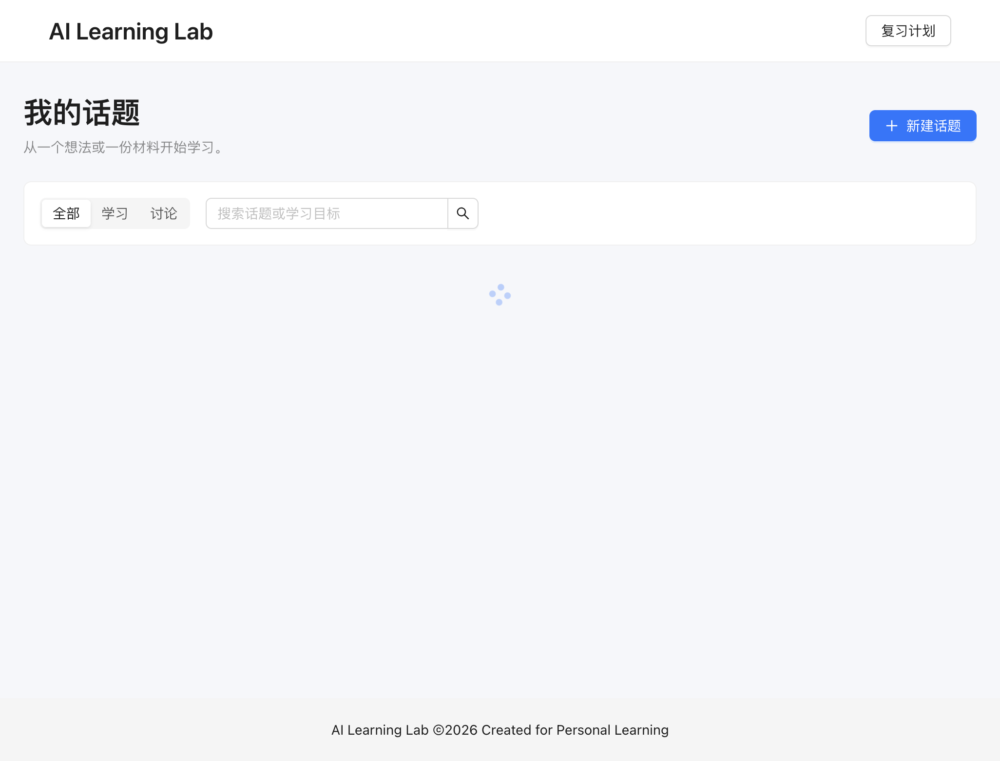
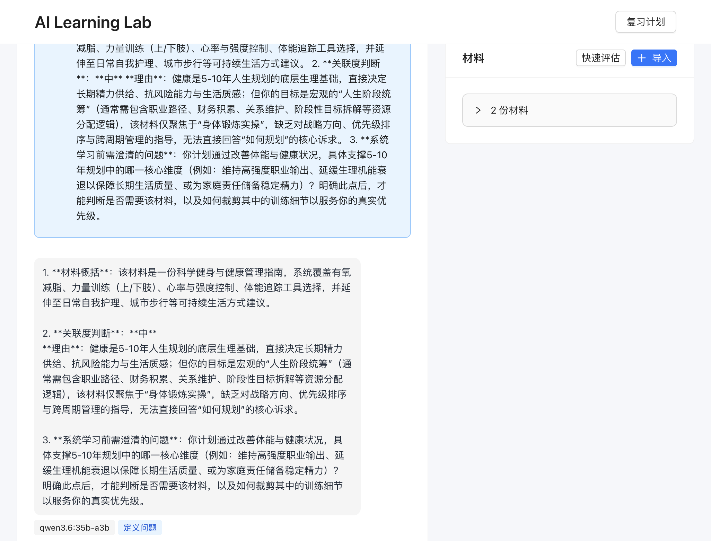

从一个模糊的念头开始，逐步探索、定义问题，并在准备好后进入系统学习。
讨论型话题适合“我有一个方向，但还不确定是否值得系统学习、也不知道如何开始”的场景。你可以只写一个想法、困惑、经历、顾虑，或导入一份想判断价值的材料。

没有准备好问题也没关系。页面会提供起步提示，例如“表达困惑”“从具体例子开始”“拆解一个模糊想法”。点击后可继续编辑，再发送。
发送后消息会自动滚到最新位置；AI 回复完成后也会自动滚到底部。聊天记录有最大高度，历史内容可在消息区域内滚动，输入框会保持在下方。

讨论默认从“探索”开始。AI 可以建议进入下一阶段，但只有你点击确认后才会切换；你也可以随时回到探索。
| 阶段 | 作用 | 默认模型 |
|---|---|---|
| 探索 | 接住碎片化表达，识别关键信息和疑问 | qwen2.5:14b |
| 定义问题 | 把对话收敛为可检验的问题、约束或选择 | qwen3:30b-a3b |
| 形成决策 | 比较现在学习、暂缓或补充前置知识等方案 | qwen3.6:35b-a3b |
每条 AI 回复下方会显示实际生成模型和该消息生成时所处的阶段。它们在任务入队时固定，因此历史消息不会因之后切换阶段而被改写。
AI 请求都在后台运行。输入框上方会显示当前状态：
右侧“材料”卡片可以导入网页链接或粘贴文本。材料导入成功后，才可用于快速评估和学习路线。
将鼠标悬浮在材料的“失败”状态标签上可查看具体原因。点击“重新导入”会复用原材料记录，清理旧正文、分块和错误信息后重新处理。
适用于已有成功导入材料时。AI 会概括材料、判断它与当前话题的关联度，并指出仍需要澄清的问题。它帮助判断材料是否有价值，不会自动生成学习计划。
当你决定继续学习时，可点击“生成学习路线”。它会结合话题目标、成功导入的材料和近期讨论，生成 3 到 5 个递进步骤、优先阅读的现有材料和第一天可执行的小行动。
确认要系统学习后，点击“转为学习型”。已有材料、讨论消息、材料评估和话题目标都会保留，之后可继续使用阅读、概念、问答、考试和复习功能。
讨论型话题当前不包含自动联网搜索、自动补充外部材料、PDF/音频/视频导入、多用户协作、云同步或逐字流式输出。它支持通过标题、网页、文本材料和自由对话完成探索、判断与进入系统学习。